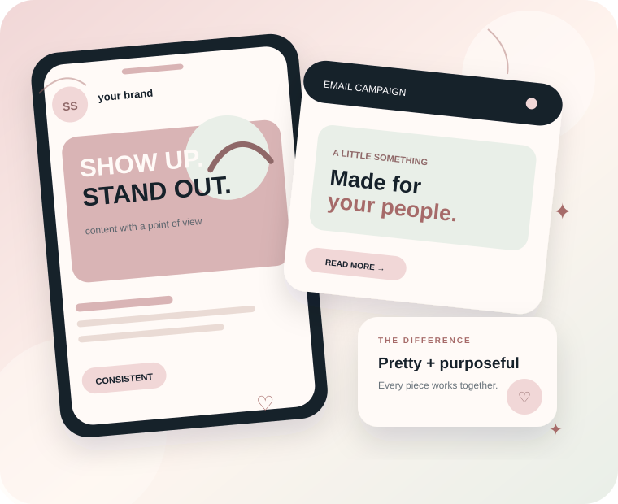

Social Media
Content strategy, creative direction, and social management designed to grow your audience and strengthen your brand.
DIGITAL + EMAIL MARKETING
I help growing brands build attention, relationships, and revenue through thoughtful digital and email marketing.
Let's work together
People decide what brands feel worth their attention in seconds. Your marketing should make those seconds count.
WHAT I DO · THE SOLELY SOCIAL MENU
Content strategy, creative direction, and social management designed to grow your audience and strengthen your brand.
Campaigns and automated flows that turn subscribers into loyal customers without sounding like a sales pitch.
Clear, practical marketing plans that connect your channels and focus your efforts on what matters.
A PEEK AT THE POSSIBILITIES
Sample concepts showing the kind of content, campaigns, and strategy visuals I can create for your brand. (Illustrative examples — not client results.)
Content that feels like your brand — not everyone else's.
Strategy with personality.
Content with intention.
THE SOLELY SOCIAL APPROACH
I’m not here to make your business look like every other business online. Solely Social is about finding the little details that make your brand yours — then turning them into marketing people remember.
WHY SOLELY SOCIAL?
You already know your business. You know your customers. You know what makes you different. My job is to turn that into marketing that actually communicates it.
Your brand gets its own voice, visuals, and point of view.
Every piece of content has a reason for being there and a next step in mind.
Polished visuals matter — but they should always support the bigger marketing picture.
FEATURED PROJECT · SAMPLE CONCEPT
BRAND + EMAIL + SOCIAL01 — THE IDEA
Imagine a service brand launching a new offer. Instead of one sales post, we build a small connected campaign: a scroll-stopping social story, a helpful email, and messaging that carries the same feeling from first impression to click.
WHAT YOU ACTUALLY GET
Every project is built to leave you with clearer messaging, better content, and a marketing system that feels easier to keep up with.
Branded content ideas, captions, creative direction, and a plan for showing up consistently.
Campaign concepts, newsletters, promotions, and customer journeys designed to feel personal.
Clear priorities and practical next steps so you know what to do — and why.
A LITTLE SOMETHING FROM ME
Tell me what you’re working on and I’ll share 3 quick ideas you could test to make your online presence feel more polished and intentional.
WHERE SHOULD WE START?
Tell me what’s happening with your marketing and we can figure out the right place to begin.
Your brand feels scattered, outdated, or inconsistent and you want a clearer direction.
Let’s talk →You know your business deserves to show up online, but you need help creating polished, on-brand content.
Let’s create →You want to turn your email list into a stronger connection with thoughtful campaigns and customer journeys.
Let’s connect →THE LITTLE THINGS MATTER
Before creating more content, I look at the details that make a brand recognizable — what you say, how you show up, and what you want people to remember.
Your captions, emails, and calls-to-action should have a voice people can recognize.
Colors, visuals, layouts, and little details should create a consistent feeling across your channels.
Beautiful content is only part of the picture. Each piece should have a purpose and a clear next step.
THE GLOW-UP
Marketing gets easier when you stop guessing and start creating with a clear point of view.

THE SOLELY SOCIAL MOOD
I’d want it to feel polished, warm, creative, confident, and just a little bit fun.
pretty
purposeful
personal
PICK YOUR VIBE
THE SOLELY SOCIAL DIFFERENCE
I focus on understanding people, building relationships, and creating experiences customers want to come back to.
Strategy and creativity work together so your brand can show up with purpose across every channel.
My approach is designed for growing brands that want to turn attention into meaningful customer relationships and revenue.
From social media to email marketing and digital strategy, I connect your marketing efforts instead of treating them like separate pieces.
WHO I HELP
Whether you’re building something new or trying to make your existing marketing feel more intentional, the goal is the same: make your business easier to notice, understand, and remember.
You’re busy running the business and need marketing that feels manageable instead of becoming another full-time job.
You’ve outgrown inconsistent posting and want a stronger, more recognizable online presence.
You need content and email marketing that clearly communicates your value and gives people a reason to reach out.
HOW IT WORKS
Share your business, audience, goals, and what you wish were working better.
I identify the marketing pieces that make the most sense for your brand and priorities.
Content, emails, and strategy are built to work together — not as random one-off posts.
Use what you learn to refine your messaging, content, and marketing over time.
A LITTLE ABOUT ME
I created Solely Social Marketing around a simple belief: your marketing should feel like you — thoughtful, creative, and genuinely connected to the people you want to reach.
I care about the details, the story behind a brand, and making sure every post, email, and strategy has a purpose. You won’t just get another marketing service — you’ll get someone who wants to understand your business and help you show up with confidence.
If you’re ready for marketing that feels personal instead of overwhelming, I’d love to create something that fits your brand.
Let’s create togetherA FEW THINGS YOU MIGHT BE WONDERING
Still figuring out what kind of help you need? Start here — and if your question isn’t below, just ask me.
No. We can focus on the specific area where your business needs support, whether that’s social content, email marketing, strategy, or a combination.
Yes. Solely Social is designed for growing businesses that want thoughtful, professional marketing without feeling like they need a giant agency.
Absolutely. That’s what the first conversation is for. You can tell me what feels stuck, and we can figure out where to begin.
No. Social media, email marketing, and digital strategy can work together as one connected marketing system.
LET'S TALK
Tell me a little about your business and what you're looking to accomplish.
We’ve received your message and we’ll be in touch soon.
Something went wrong while sending your message. Please try again.